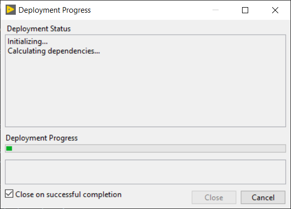
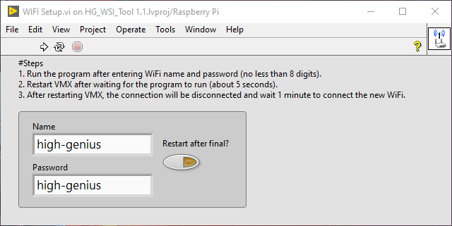
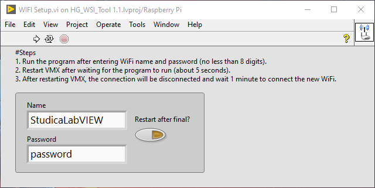
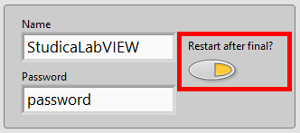
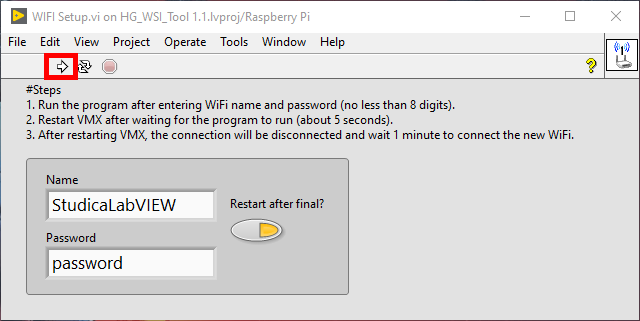

Setting up the WiFi
WiFi and Ethernet are already set up on the LabVIEW image. However, sometimes the WiFi SSID and password must be changed.
Connecting to the WiFi
When the VMX is powered on, the default WiFi of the LabVIEW image will be active.

WiFi Settings
SSID: high-genius
PASS: high-genius
Connect to the WiFi by selecting high-genius and using high-genius as the password.
Changing the WiFi
Open LabVIEW 2020 Community Edition and select
File->Open Project.
Select the
HG_WSI_Tool xx.lvprojthat was downloaded above.
Connect the project to the VMX Target by right-clicking on
Raspberry Pi (172.16.0.1)and selectingConnect.
A window will pop up showing the project trying to establish a connection.
The tiny green dot next to the
Raspberry Pi (172.16.0.1)should now be bright green.
Click on the plus next to the
Raspberry Pi (172.16.0.1)and double click onWIFI Setup.vi.
The WiFi Setup vi will open up.
Change the
NameandPasswordto what is required for you.Important
The Name and Password must be more
8digits.Here the Name / SSID will be set to
StudicaLabVIEW, and the password will be set topassword.Select the
Restart after final?push button.This will reboot the VMX after the WiFi has been set.
Hit the run button to execute the change.
A window will pop up saying the connection has been lost. Hit
ok.
Checking the WiFi again, we can see that the change has occurred.

To check that everything is still working, repeat steps
3to5to check that the project can still connect to the VMX.